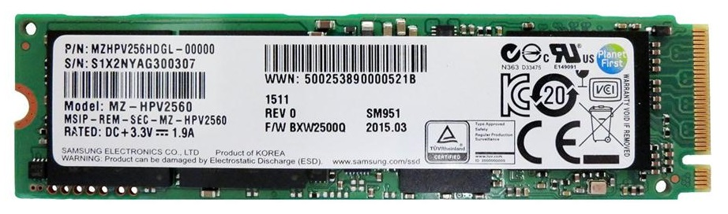

The new rig
After saving up money for a while I bought myself a new desktop PC. Its main purpose would be gaming and some development stuff but since gaming has a big influence on the parts, I rolled with that. Here is the part list I ended up ordering.
Specs!
- Intel Core i5-6600.
- Asus H170 Pro Gaming.
- 256GB Samsung SM951.
- 2x 8GB Kingston Hyper-X 2133MHz DDR4
- MSI R9 390 8GB.
- Seasonic G-Series 650 Watt.
I re-used my (very) old case, a Cooler Master Centurion to hold all my parts.
But why?
I picked the i5 over the i7 because I really have no use for all those Hyper threading cores. Games generally don’t (not yet at least) utilize all the cores on a CPU so 4 is plenty. There is a K version of the same model but I have no interest in overclocking. The i7 might be a good choice for programming tasks, but since that took a back-seat to gaming the i5 was the way to go.
The mainboard had to be a socket 1151 due to the Skylake CPU. I chose the H170 board because of its M.2 SATA Express capability. That bit is important because it allows me to install the SM951 SSD, holy crap is that thing fast!

The SM951 is a solid state drive, but instead of using regular SATA, it runs directly on PCI Express (3.0 4x). That gives it super low latency and very high throughput. An in-depth review can be found here at Tom’s Hardware. You could argue the necessity of a disk that fast in a gaming rig, but my games load SUPER fast now!
I didn’t spend a lot of time researching memory. It had to be DDR4 (Skylake/mainboard requirement) and the board supports 2133Mhz. There is still the option of XMP, but I haven’t checked if I can boost the speed of the memory and the benefits of doing so.
The bulk of the budget went into this thing, the graphics card. I wanted a card that would last me a good while, but also not break the bank entirely and I think this is a good middle-ground. I picked the R9 390 over its direct adversary: the Nvidia GTX970. It has twice the amount of memory which could come in handy for games that use very large textures and games like GTA-V that take full advantage of the memory to make the game world a more diverse place.
To power the whole thing I picked up a Seasonic PSU with enough oomph to support everything. The only criteria was 80+ Gold from a reputable brand.
Build and installation
The 390 was a very tight fit but it went flawless right up to the point where I forgot that the BIOS on the mainboard required an update for the CPU I installed in it. Some anxiety ensued when I tried to install Windows and it started puking MACHINE_CHECK_EXCEPTION blue screens (which indicate hardware failure) but everything turned out fine after updating the BIOS to the latest version.
Windows did not detect all the hardware out of the box, probably because its pretty new stuff as far as drivers go. Some manual downloading and installation was necessary but that’s no problem.
The system is much quieter than I expected. Not that it matters, I use headphones. There is some noise when the system is under heavy load but nothing annoying.
If anyone needs me, I’ll be playing videogames :-P